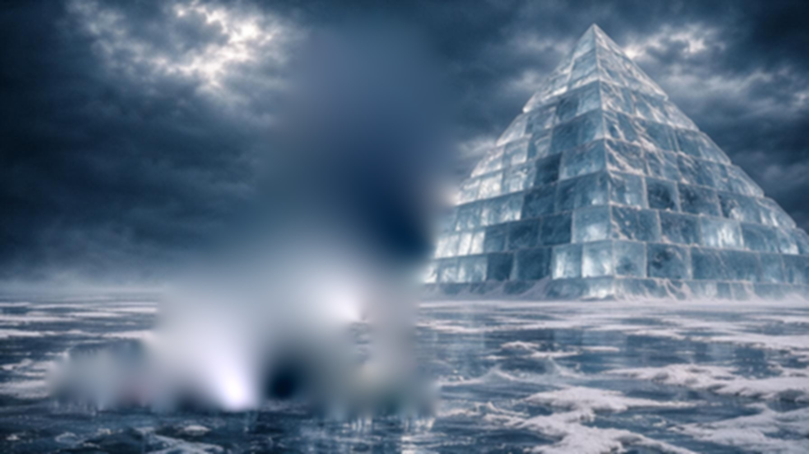
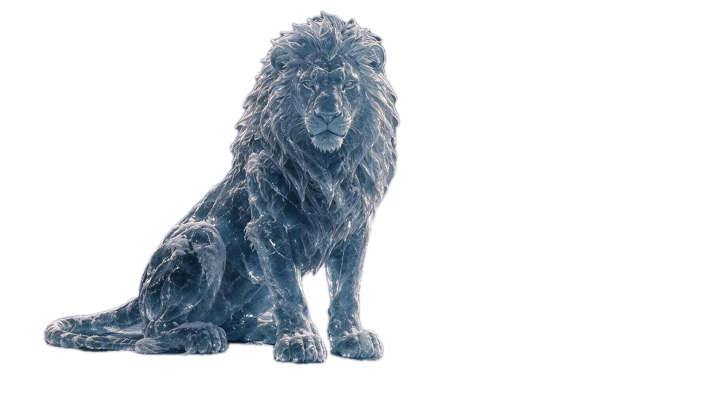
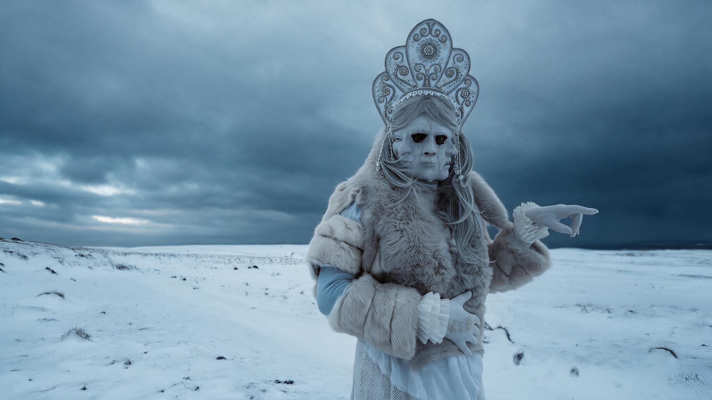

The Ritualists’ circle · Seven rays, one spine
The Orderov the Seven Rays
A community for artists, writers, musicians — the Ritualists. Join with a profile, choose your rays, and come into the room where the work is made.
7
Members
7
Rays
26 Nov
Next gathering
Open
Circle open
The premise
This is not a feed.It is a circle.
The old story says the Agmen raised seven pyramids in the ice and set guardians around them. Whatever you make of the myth, the shape of it is the point: seven disciplines, held in common, guarded by the people who keep showing up.
The Order is that circle in practice. A profile, seven working rays, thirty-three degrees on the spine. Nobody judges you to let you in: joining is a handle and a few lines. The reward comes later, when it has earned its place.
Find your peopleHow the work moves
Three parties, one current
The Order makes its own art. The Ritualists make for the Order, and then make their own work from it. The universe expands in both directions.
1st party
The Order makes
Our own band, game, paintings, masks, clothing, and world. The first party holds the canon and the first activator: the music video.
2nd party
Ritualists make for us
Briefed work: a staff, a sigil, a track, a shot. Specific needs, selected contributions, licensed collaboration with the people who make it.
3rd party
Ritualists make their own
Work built from ours — your landscapes, your music, your business. Licence the concept, pass the quality check, and carry the world further.
The seven rays
Seven working rays
Pick the rays you work in. They are how members find each other, and how the room sorts itself without becoming a directory of job titles.
Music
The band, the game, and the room to upload your own. Built around the first activator: the music video.
Find members →Craftsmanship
Masks, clothing, staffs, sigils — made by hand, shown and sold through the Order.
Find members →Graphics
Design, image, clip, and environment. Work for the Order or build your own visual world.
Find members →Lore & Writing
Story development and storytelling. The mythology is a living draft.
Find members →The Fifth Ray
The presentation leaves this ray unnamed. A seat held open for the practice the circle has not named yet.
Find members →Alchemy
Using the Order’s art in your own practice and business. Licensed, with a quality check.
Find members →Community
Lectures, discussions, critique nights, and the fortnightly council.
Find members →The spine
Thirty-threedegrees
Rank is not a gate. It is a record of what you have made, and with whom. Every member begins at the first vertebra and climbs by doing the work.
Level I · The Making
Create a profile. Put your own work into the circle.
Level II · The Co-creation
Work with others, and on the Order’s own art.
Level III · The Team
Help shape the Order itself.
The reward system is introduced later, once the circle is the right size. Joining stays simple: a handle, a profile, and the first ray.


The journal
Dispatches

By artist1 · 21 Nov
On making things that outlast the feed
A post is gone in a day. A room, a book, a song someone can hum back to you — those have a different clock. A note on why this community exists.
14 Nov
Notes from the first critique night
Six people, three unfinished pieces, and a rule against saying “I like it.” What actually happened when we tried to talk about work without scoring it.
7 Nov
The seven rays, in practice
Why seven disciplines instead of one long list of job titles — and how the rays shape who finds whom inside the circle.


The room between gatherings
The conversation lives in Discord
Works in progress, reading lists, studio photos, voice rooms, and the occasional argument about whether a thing is finished. Members get in with one link.